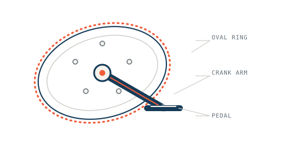

Mechanics project · 2024
Oval vs. Round
Bicycle Chainrings
To compare oval and round chainrings, I simulated the pedalling cycle across pedal angles to examine how chainring geometry affects crank torque through a revolution. Two experiments complemented the model: one measured the torque needed to lift a load at different pedal angles, and another estimated transmitted work from wheel rotations. The simulation suggested only marginal differences under the conditions studied.

Explore the project